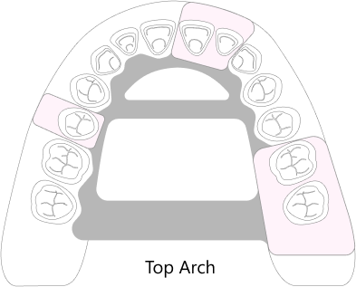

Partial Dentures
an easy alternative to tooth replacement
A partial denture prosthesis is an elegant and easy way to replace multiple teeth in and arch with great outcomes.
What to expect
- Multiple 1 Hr appointments
What it is
A partial can be used for
- Affordable replacement of a missing teeth
- Esthetic and functional improvements
- Cheap alternative to bridges and implants
However a partial denture
- Needs to be removed and cleaned after every meal
- Needs to be removed at night
- May need periodic maintenance by your doctor
- May need to be refabricated if any additional tooth loss occurs
How it is accomplished
The process of partial denture fabrication begins with making sure that the remaining teeth have enough health and strength to support added stresses of a prosthesis
After multiple impressions and fittings the final result will feature metal or acrylic frames that will cover certain area of tissue. This can cause minor discomfort at which point the partials will be adjusted.
The discomfort of the new prostheses usually disappears within two weeks after the adjustments and delivery has been done

Materials
- Acrylic These prostheses are made of PMMA (poly-methyl-methacrylate) material. This type of acrylic is strong enough to support the chewing forces while offering a great degree of reparability and flexibility in future modifications. However the use of clasps and retentive features is limited.
- Metal-acrylic These prostheses are made of PMMA acrylic as well as nickel-cobalt alloy frame for reinforcement. This type of prosthesis is much stiffer and may offer greater stability due to a more exact design and increased strength of clasping mechanisms. However ability to repair or modify this prosthesis is greatly reduced due to the rigidity of the frame